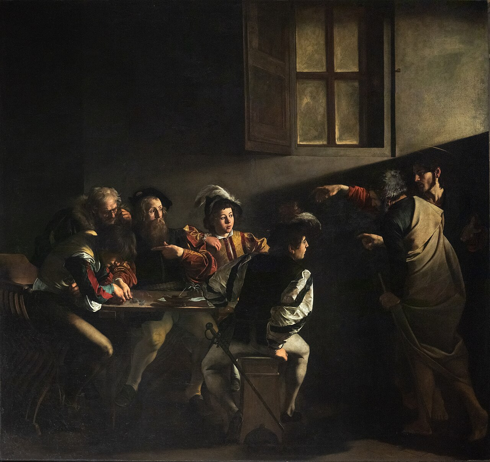
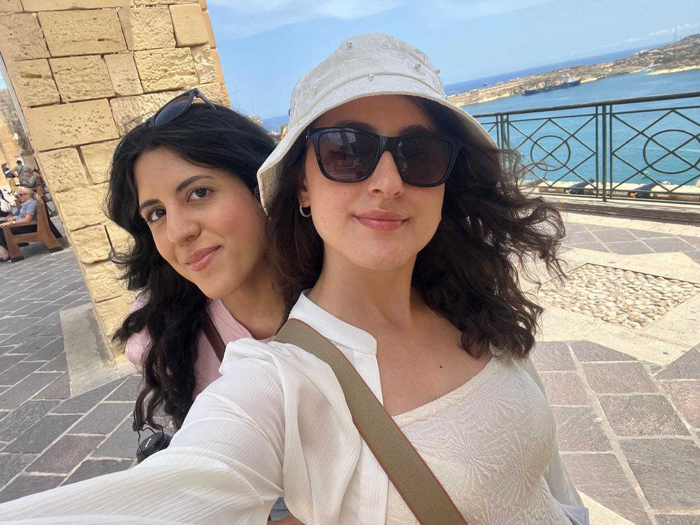

Knowledge Graph Enrichment using Large Language Models

A masterpiece by Caravaggio representing one of the most iconic moments in Baroque religious art. This project explores how Knowledge Graphs and Large Language Models can enrich its semantic description.
This project explores the integration of Knowledge Graphs (KGs) and Large Language Models (LLMs) for enriching cultural heritage data. The selected case study is The Calling of Saint Matthew by Michelangelo Merisi da Caravaggio, a landmark painting of the Baroque period.
The main objective is to investigate how structured knowledge stored in the ArCo Knowledge Graph can be extended using semantic inference and generative capabilities of LLMs.
We began by identifying Cultural Properties related to the artwork using SPARQL queries, and then progressively refined the dataset by eliminating ambiguity and improving entity precision.
We started with a query designed to retrieve Cultural Properties related to the iconography of The Calling of Saint Matthew. To improve recall, we used FILTER and REGEX to match different textual variations such as “vocazione di San Matteo”, “San Matteo”, and “Caravaggio”.
We applied DISTINCT to remove duplicates caused by multilingual labels in ArCo (Italian and English). The results included paintings, sculptures, and decorative works associated with Saint Matthew.
However, we observed ambiguity in the dataset: some results referred to works by Michelangelo Merisi da Caravaggio, while others referenced artists whose names include “da Caravaggio” or stylistic expressions such as “maniera di Caravaggio”. This introduced noise and showed that lexical matching alone is insufficient.
To resolve this issue, we refined the query by focusing on author attribution, ensuring correct identification of Caravaggio-related works only.

Parvana Gurbanova & Elnara Tumarkhanova